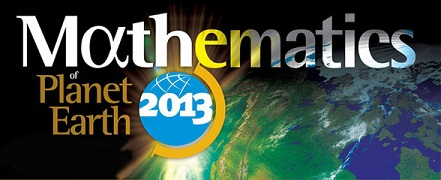

The Center for Industrial Mathematics and Statistics and the Department of Mathematical Sciences at WPI are partnering in the global initiative Mathematics of Planet Earth 2013 (MPE2013) to highlight the importance of mathematics and statistics in
- encouraging research in identifying and solving fundamental questions about planet earth,
- encouraging educators at all levels to communicate the issues related to planet earth, and
- informing the public about the essential role of the mathematical sciences in facing the challenges to our planet.
CIMS and the Department of Mathematical Sciences will dedicate a number of activities to this initiative during 2013:
The four themes of MPE2013 are:
- A PLANET TO DISCOVER: oceans; meteorology and climate; mantle processes, natural resources, solar systems
- A PLANET SUPPORTING LIFE: ecology, biodiversity, evolution
- A PLANET ORGANIZED BY HUMANS: political, economic, social and financial systems; organization of transport and communications networks; management of resources; energy
- A PLANET AT RISK: climate change, sustainable development, epidemics; invasive species, natural disasters
For more information, contact Suzanne Weekes (sweekes@wpi.edu) or Bogdan Vernescu (vernescu@wpi.edu).